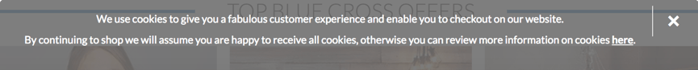
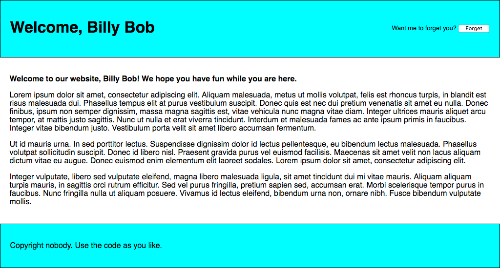
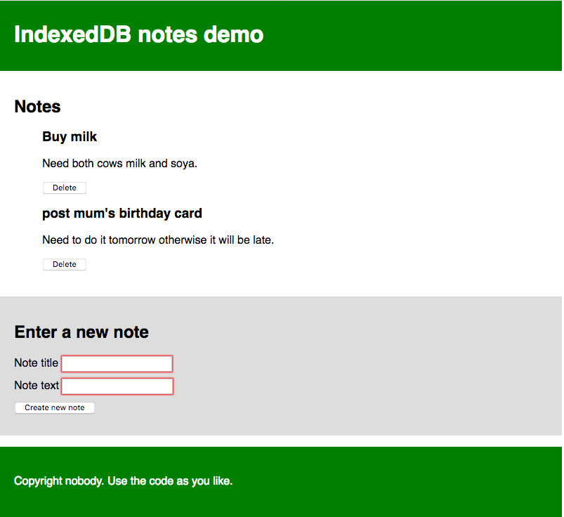
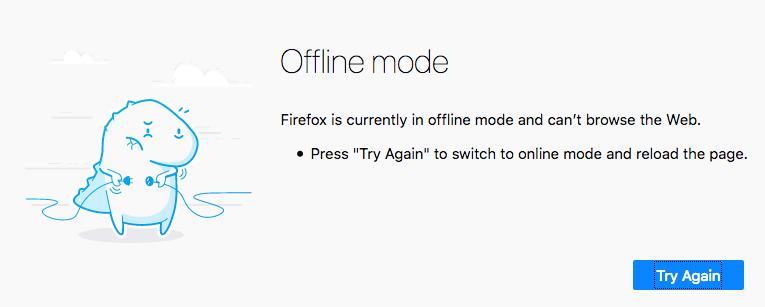

Modern web browsers support a number of ways for web sites to store data on the user's computer — with the user's permission — then retrieve it when necessary. This lets you persist data for long-term storage, save sites or documents for offline use, retain user-specific settings for your site, and more. This article explains the very basics of how these work.
| Prerequisites: | JavaScript basics (see first steps, building blocks, JavaScript objects), the basics of Client-side APIs |
|---|---|
| Objective: | To learn how to use client-side storage APIs to store application data. |
Client-side storage?
Elsewhere in the MDN learning area we talked about the difference between static sites and dynamic sites. Most major modern web sites are dynamic — they store data on the server using some kind of database (server-side storage), then run server-side code to retrieve needed data, insert it into static page templates, and serve the resulting HTML to the client to be displayed by the user's browser.
Client-side storage works on similar principles, but has different uses. It consists of JavaScript APIs that allow you to store data on the client (i.e. on the user's machine) and then retrieve it when needed. This has many distinct uses, such as:
- Personalizing site preferences (e.g. showing a user's choice of custom widgets, color scheme, or font size).
- Persisting previous site activity (e.g. storing the contents of a shopping cart from a previous session, remembering if a user was previously logged in).
- Saving data and assets locally so a site will be quicker (and potentially less expensive) to download, or be usable without a network connection.
- Saving web application generated documents locally for use offline
Often client-side and server-side storage are used together. For example, you could download from a database a batch of music files used by a web game or music player app store them inside a client-side database, and play them as needed. The user would only have to download the music files once — on subsequent visits they would be retrieved from the database instead.
Note: There are limits to the amount of data you can store using client-side storage APIs (possibly both per individual API and cumulatively); the exact limit varies depending on the browser and possibly based on user settings. See Browser storage limits and eviction criteria for more information.
Old fashioned: cookies
The concept of client-side storage has been around for a long time. Since the early days of the web, sites have used cookies to store information to personalize user experience on websites. They're the earliest form of client-side storage commonly used on the web.
Because of that age, there are a number of problems — both technical and user experience-wise — afflicting cookies. These problems are significant enough that upon visiting a site for the first time, people living in Europe are shown messages informing them if they will use cookies to store data about them. This is due to a piece of European Union legislation known as the EU Cookie directive.

For these reasons, we won't be teaching you how to use cookies in this article. Between being outdated, their assorted security problems, and inability to store complex data, there are better, more modern ways to store a wider variety of data on the user's computer.
The only advantage cookies have is that they're supported by extremely old browsers, so if your project requires that you support browsers that are already obsolete (such as Internet Explorer 8 or earlier), cookies may still be useful, but for most projects you shouldn't need to resort to them anymore.
Note: Why are there still new sites being created using cookies? This is mostly because of developers' habits, use of older libraries that still use cookies, and the existence of many web sites providing out-of-date reference and training materials to learn how to store data.
New school: Web Storage and IndexedDB
Modern browsers have much easier, more effective APIs for storing client-side data than by using cookies.
- The Web Storage API provides a very simple syntax for storing and retrieving smaller, data items consisting of a name and a corresponding value. This is useful when you just need to store some simple data, like the user's name, whether they are logged in, what color to use for the background of the screen, etc.
- The IndexedDB API provides the browser with a complete database system for storing complex data. This can be used for things from complete sets of customer records to even complex data types like audio or video files.
You'll learn more about these APIs below.
The future: Cache API
Some modern browsers support the new Cache API. This API is designed for storing HTTP responses to specific requests, and is very useful for doing things like storing website assets offline so the site can subsequently be used without a network connection. Cache is usually used in combination with the Service Worker API, although it doesn't have to be.
Use of Cache and Service Workers is an advanced topic, and we won't be covering it in great detail in this article, although we will show a simple example in the Offline asset storage section below.
Storing simple data — web storage
The Web Storage API is very easy to use — you store simple name/value pairs of data (limited to strings, numbers, etc.) and retrieve these values when needed.
Basic syntax
Let's show you how:
-
First, go to our web storage blank template on GitHub (open this in a new tab).
-
Open the JavaScript console of your browser's developer tools.
-
All of your web storage data is contained within two object-like structures inside the browser:
sessionStorageandlocalStorage. The first one persists data for as long as the browser is open (the data is lost when the browser is closed) and the second one persists data even after the browser is closed and then opened again. We'll use the second one in this article as it is generally more useful.The
Storage.setItem()method allows you to save a data item in storage — it takes two parameters: the name of the item, and its value. Try typing this into your JavaScript console (change the value to your own name, if you wish!):localStorage.setItem('name','Chris'); -
The
Storage.getItem()method takes one parameter — the name of a data item you want to retrieve — and returns the item's value. Now type these lines into your JavaScript console:var myName = localStorage.getItem('name'); myNameUpon typing in the second line, you should see that the
myNamevariable now contains the value of thenamedata item. -
The
Storage.removeItem()method takes one parameter — the name of a data item you want to remove — and removes that item out of web storage. Type the following lines into your JavaScript console:localStorage.removeItem('name'); var myName = localStorage.getItem('name'); myNameThe third line should now return
null— thenameitem no longer exists in the web storage.
The data persists!
One key feature of web storage is that the data persists between page loads (and even when the browser is shut down, in the case of localStorage). Let's look at this in action.
-
Open our web storage blank template again, but this time in a different browser to the one you've got this tutorial open in! This will make it easier to deal with.
-
Type these lines into the browser's JavaScript console:
localStorage.setItem('name','Chris'); var myName = localStorage.getItem('name'); myNameYou should see the name item returned.
-
Now close down the browser and open it up again.
-
Enter the following lines again:
var myName = localStorage.getItem('name'); myNameYou should see that the value is still available, even though the browser has been closed and then opened again.
Separate storage for each domain
There is a separate data store for each domain (each separate web address loaded in the browser). You will see that if you load two websites (say google.com and amazon.com) and try storing an item on one website, it won't be available to the other website.
This makes sense — you can imagine the security issues that would arise if websites could see each other's data!
A more involved example
Let's apply this new-found knowledge by writing a simple working example to give you an idea of how web storage can be used. Our example will allow you enter a name, after which the page will update to give you a personalized greeting. This state will also persist across page/browser reloads, because the name is stored in web storage.
You can find the example HTML at personal-greeting.html — this contains a simple website with a header, content, and footer, and a form for entering your name.

Let's build up the example, so you can understand how it works.
-
First, make a local copy of our personal-greeting.html file in a new directory on your computer.
-
Next, note how our HTML references a JavaScript file called
index.js(see line 40). We need to create this and write our JavaScript code into it. Create anindex.jsfile in the same directory as your HTML file. -
We'll start off by creating references to all the HTML features we need to manipulate in this example — we'll create them all as constants, as these references do not need to change in the lifecycle of the app. Add the following lines to your JavaScript file:
// create needed constants const rememberDiv = document.querySelector('.remember'); const forgetDiv = document.querySelector('.forget'); const form = document.querySelector('form'); const nameInput = document.querySelector('#entername'); const submitBtn = document.querySelector('#submitname'); const forgetBtn = document.querySelector('#forgetname'); const h1 = document.querySelector('h1'); const personalGreeting = document.querySelector('.personal-greeting'); -
Next up, we need to include a small event listener to stop the form from actually submitting itself when the submit button is pressed, as this is not the behavior we want. Add this snippet below your previous code:
// Stop the form from submitting when a button is pressed form.addEventListener('submit', function(e) { e.preventDefault(); }); -
Now we need to add an event listener, the handler function of which will run when the "Say hello" button is clicked. The comments explain in detail what each bit does, but in essence here we are taking the name the user has entered into the text input box and saving it in web storage using
setItem(), then running a function callednameDisplayCheck()that will handle updating the actual website text. Add this to the bottom of your code:// run function when the 'Say hello' button is clicked submitBtn.addEventListener('click', function() { // store the entered name in web storage localStorage.setItem('name', nameInput.value); // run nameDisplayCheck() to sort out displaying the // personalized greetings and updating the form display nameDisplayCheck(); }); -
At this point we also need an event handler to run a function when the "Forget" button is clicked — this is only displayed after the "Say hello" button has been clicked (the two form states toggle back and forth). In this function we remove the
nameitem from web storage usingremoveItem(), then again runnameDisplayCheck()to update the display. Add this to the bottom:// run function when the 'Forget' button is clicked forgetBtn.addEventListener('click', function() { // Remove the stored name from web storage localStorage.removeItem('name'); // run nameDisplayCheck() to sort out displaying the // generic greeting again and updating the form display nameDisplayCheck(); }); -
It is now time to define the
nameDisplayCheck()function itself. Here we check whether the name item has been stored in web storage by usinglocalStorage.getItem('name')as a conditional test. If it has been stored, this call will evaluate totrue; if not, it will befalse. If it istrue, we display a personalized greeting, display the "forget" part of the form, and hide the "Say hello" part of the form. If it isfalse, we display a generic greeting and do the opposite. Again, put the following code at the bottom:// define the nameDisplayCheck() function function nameDisplayCheck() { // check whether the 'name' data item is stored in web Storage if(localStorage.getItem('name')) { // If it is, display personalized greeting let name = localStorage.getItem('name'); h1.textContent = 'Welcome, ' + name; personalGreeting.textContent = 'Welcome to our website, ' + name + '! We hope you have fun while you are here.'; // hide the 'remember' part of the form and show the 'forget' part forgetDiv.style.display = 'block'; rememberDiv.style.display = 'none'; } else { // if not, display generic greeting h1.textContent = 'Welcome to our website '; personalGreeting.textContent = 'Welcome to our website. We hope you have fun while you are here.'; // hide the 'forget' part of the form and show the 'remember' part forgetDiv.style.display = 'none'; rememberDiv.style.display = 'block'; } } -
Last but not least, we need to run the
nameDisplayCheck()function every time the page is loaded. If we don't do this, then the personalized greeting will not persist across page reloads. Add the following to the bottom of your code:document.body.onload = nameDisplayCheck;
Your example is finished — well done! All that remains now is to save your code and test your HTML page in a browser. You can see our finished version running live here.
Note: There is another, slightly more complex example to explore at Using the Web Storage API.
Note: In the line <script src="index.js" defer></script> of the source for our finished version, the defer attribute specifies that the contents of the <script> element will not execute until the page has finished loading.
Storing complex data — IndexedDB
The IndexedDB API (sometimes abbreviated IDB) is a complete database system available in the browser in which you can store complex related data, the types of which aren't limited to simple values like strings or numbers. You can store videos, images, and pretty much anything else in an IndexedDB instance.
However, this does come at a cost: IndexedDB is much more complex to use than the Web Storage API. In this section, we'll really only scratch the surface of what it is capable of, but we will give you enough to get started.
Working through a note storage example
Here we'll run you through an example that allows you to store notes in your browser and view and delete them whenever you like, getting you to build it up for yourself and explaining the most fundamental parts of IDB as we go along.
The app looks something like this:

Each note has a title and some body text, each individually editable. The JavaScript code we'll go through below has detailed comments to help you understand what's going on.
Getting started
- First of all, make local copies of our
index.html,style.css, andindex-start.jsfiles into a new directory on your local machine. - Have a look at the files. You'll see that the HTML is pretty simple: a web site with a header and footer, as well as a main content area that contains a place to display notes, and a form for entering new notes into the database. The CSS provides some simple styling to make it clearer what is going on. The JavaScript file contains five declared constants containing references to the
<ul>element the notes will be displayed in, the title and body<input>elements, the<form>itself, and the<button>. - Rename your JavaScript file to
index.js. You are now ready to start adding code to it.
Database initial set up
Now let's look at what we have to do in the first place, to actually set up a database.
-
Below the constant declarations, add the following lines:
// Create an instance of a db object for us to store the open database in let db;
Here we are declaring a variable called
db— this will later be used to store an object representing our database. We will use this in a few places, so we've declared it globally here to make things easier. -
Next, add the following to the bottom of your code:
window.onload = function() { };We will write all of our subsequent code inside this
window.onloadevent handler function, called when the window'sloadevent fires, to make sure we don't try to use IndexedDB functionality before the app has completely finished loading (it could fail if we don't). -
Inside the
window.onloadhandler, add the following:// Open our database; it is created if it doesn't already exist // (see onupgradeneeded below) let request = window.indexedDB.open('notes_db', 1);This line creates a
requestto open version1of a database callednotes_db. If this doesn't already exist, it will be created for you by subsequent code. You will see this request pattern used very often throughout IndexedDB. Database operations take time. You don't want to hang the browser while you wait for the results, so database operations are asynchronous, meaning that instead of happening immediately, they will happen at some point in the future, and you get notified when they're done.To handle this in IndexedDB, you create a request object (which can be called anything you like — we called it
requestso it is obvious what it is for). You then use event handlers to run code when the request completes, fails, etc., which you'll see in use below.Note: The version number is important. If you want to upgrade your database (for example, by changing the table structure), you have to run your code again with an increased version number, different schema specified inside the
onupgradeneededhandler (see below), etc. We won't cover upgrading databases in this simple tutorial. -
Now add the following event handlers just below your previous addition — again inside the
window.onloadhandler:// onerror handler signifies that the database didn't open successfully request.onerror = function() { console.log('Database failed to open'); }; // onsuccess handler signifies that the database opened successfully request.onsuccess = function() { console.log('Database opened successfully'); // Store the opened database object in the db variable. This is used a lot below db = request.result; // Run the displayData() function to display the notes already in the IDB displayData(); };The
request.onerrorhandler will run if the system comes back saying that the request failed. This allows you to respond to this problem. In our simple example, we just print a message to the JavaScript console.The
request.onsuccesshandler on the other hand will run if the request returns successfully, meaning the database was successfully opened. If this is the case, an object representing the opened database becomes available in therequest.resultproperty, allowing us to manipulate the database. We store this in thedbvariable we created earlier for later use. We also run a custom function calleddisplayData(), which displays the data in the database inside the<ul>. We run it now so that the notes already in the database are displayed as soon as the page loads. You'll see this defined later on. -
Finally for this section, we'll add probably the most important event handler for setting up the database:
request.onupdateneeded. This handler runs if the database has not already been set up, or if the database is opened with a bigger version number than the existing stored database (when performing an upgrade). Add the following code, below your previous handler:// Setup the database tables if this has not already been done request.onupgradeneeded = function(e) { // Grab a reference to the opened database let db = e.target.result; // Create an objectStore to store our notes in (basically like a single table) // including a auto-incrementing key let objectStore = db.createObjectStore('notes_os', { keyPath: 'id', autoIncrement:true }); // Define what data items the objectStore will contain objectStore.createIndex('title', 'title', { unique: false }); objectStore.createIndex('body', 'body', { unique: false }); console.log('Database setup complete'); };This is where we define the schema (structure) of our database; that is, the set of columns (or fields) it contains. Here we first grab a reference to the existing database from
e.target.result(the event target'sresultproperty), which is therequestobject. This is equivalent to the linedb = request.result;inside theonsuccesshandler, but we need to do this separately here because theonupgradeneededhandler (if needed) will run before theonsuccesshandler, meaning that thedbvalue wouldn't be available if we didn't do this.We then use
IDBDatabase.createObjectStore()to create a new object store inside our opened database callednotes_os. This is equivalent to a single table in a conventional database system. We've given it the name notes, and also specified anautoIncrementkey field calledid— in each new record this will automatically be given an incremented value — the developer doesn't need to set this explicitly. Being the key, theidfield will be used to uniquely identify records, such as when deleting or displaying a record.We also create two other indexes (fields) using the
IDBObjectStore.createIndex()method:title(which will contain a title for each note), andbody(which will contain the body text of the note).
So with this simple database schema set up, when we start adding records to the database; each one will be represented as an object along these lines:
Adding data to the database
Now let's look at how we can add records to the database. This will be done using the form on our page.
Below your previous event handler (but still inside the window.onload handler), add the following line, which sets up an onsubmit handler that runs a function called addData() when the form is submitted (when the submit <button> is pressed leading to a successful form submission):
// Create an onsubmit handler so that when the form is submitted the addData() function is run form.onsubmit = addData;
Now let's define the addData() function. Add this below your previous line:
// Define the addData() function
function addData(e) {
// prevent default - we don't want the form to submit in the conventional way
e.preventDefault();
// grab the values entered into the form fields and store them in an object ready for being inserted into the DB
let newItem = { title: titleInput.value, body: bodyInput.value };
// open a read/write db transaction, ready for adding the data
let transaction = db.transaction(['notes_os'], 'readwrite');
// call an object store that's already been added to the database
let objectStore = transaction.objectStore('notes_os');
// Make a request to add our newItem object to the object store
var request = objectStore.add(newItem);
request.onsuccess = function() {
// Clear the form, ready for adding the next entry
titleInput.value = '';
bodyInput.value = '';
};
// Report on the success of the transaction completing, when everything is done
transaction.oncomplete = function() {
console.log('Transaction completed: database modification finished.');
// update the display of data to show the newly added item, by running displayData() again.
displayData();
};
transaction.onerror = function() {
console.log('Transaction not opened due to error');
};
}
This is quite complex; breaking it down, we:
- Run
Event.preventDefault()on the event object to stop the form actually submitting in the conventional manner (this would cause a page refresh and spoil the experience). - Create an object representing a record to enter into the database, populating it with values from the form inputs. note that we don't have to explicitly include an
idvalue — as we explained earlier, this is auto-populated. - Open a
readwritetransaction against thenotes_osobject store using theIDBDatabase.transaction()method. This transaction object allows us to access the object store so we can do something to it, e.g. add a new record. - Access the object store using the
IDBTransaction.objectStore()method, saving the result in theobjectStorevariable. - Add the new record to the database using
IDBObjectStore.add(). This creates a request object, in the same fashion as we've seen before. - Add a bunch of event handlers to the
requestand thetransactionto run code at critical points in the lifecycle. Once the request has succeeded, we clear the form inputs ready for entering the next note. Once the transaction has completed, we run thedisplayData()function again to update the display of notes on the page.
Displaying the data
We've referenced displayData() twice in our code already, so we'd probably better define it. Add this to your code, below the previous function definition:
// Define the displayData() function
function displayData() {
// Here we empty the contents of the list element each time the display is updated
// If you didn't do this, you'd get duplicates listed each time a new note is added
while (list.firstChild) {
list.removeChild(list.firstChild);
}
// Open our object store and then get a cursor - which iterates through all the
// different data items in the store
let objectStore = db.transaction('notes_os').objectStore('notes_os');
objectStore.openCursor().onsuccess = function(e) {
// Get a reference to the cursor
let cursor = e.target.result;
// If there is still another data item to iterate through, keep running this code
if(cursor) {
// Create a list item, h3, and p to put each data item inside when displaying it
// structure the HTML fragment, and append it inside the list
let listItem = document.createElement('li');
let h3 = document.createElement('h3');
let para = document.createElement('p');
listItem.appendChild(h3);
listItem.appendChild(para);
list.appendChild(listItem);
// Put the data from the cursor inside the h3 and para
h3.textContent = cursor.value.title;
para.textContent = cursor.value.body;
// Store the ID of the data item inside an attribute on the listItem, so we know
// which item it corresponds to. This will be useful later when we want to delete items
listItem.setAttribute('data-note-id', cursor.value.id);
// Create a button and place it inside each listItem
let deleteBtn = document.createElement('button');
listItem.appendChild(deleteBtn);
deleteBtn.textContent = 'Delete';
// Set an event handler so that when the button is clicked, the deleteItem()
// function is run
deleteBtn.onclick = deleteItem;
// Iterate to the next item in the cursor
cursor.continue();
} else {
// Again, if list item is empty, display a 'No notes stored' message
if(!list.firstChild) {
let listItem = document.createElement('li');
listItem.textContent = 'No notes stored.';
list.appendChild(listItem);
}
// if there are no more cursor items to iterate through, say so
console.log('Notes all displayed');
}
};
}
Again, let's break this down:
- First we empty out the
<ul>element's content, before then filling it with the updated content. If you didn't do this, you'd end up with a huge list of duplicated content being added to with each update. - Next, we get a reference to the
notes_osobject store usingIDBDatabase.transaction()andIDBTransaction.objectStore()like we did inaddData(), except here we are chaining them together in one line. - The next step is to use
IDBObjectStore.openCursor()method to open a request for a cursor — this is a construct that can be used to iterate over the records in an object store. We chain anonsuccesshandler on to the end of this line to make the code more concise — when the cursor is successfully returned, the handler is run. - We get a reference to the cursor itself (an
IDBCursorobject) using letcursor = e.target.result. - Next, we check to see if the cursor contains a record from the datastore (
if(cursor){ ... }) — if so, we create a DOM fragment, populate it with the data from the record, and insert it into the page (inside the<ul>element). We also include a delete button that, when clicked, will delete that note by running thedeleteItem()function, which we will look at in the next section. - At the end of the
ifblock, we use theIDBCursor.continue()method to advance the cursor to the next record in the datastore, and run the content of theifblock again. If there is another record to iterate to, this causes it to be inserted into the page, and thencontinue()is run again, and so on. - When there are no more records to iterate over,
cursorwill returnundefined, and therefore theelseblock will run instead of theifblock. This block checks whether any notes were inserted into the<ul>— if not, it inserts a message to say no note was stored.
Deleting a note
As stated above, when a note's delete button is pressed, the note is deleted. This is achieved by the deleteItem() function, which looks like so:
// Define the deleteItem() function
function deleteItem(e) {
// retrieve the name of the task we want to delete. We need
// to convert it to a number before trying it use it with IDB; IDB key
// values are type-sensitive.
let noteId = Number(e.target.parentNode.getAttribute('data-note-id'));
// open a database transaction and delete the task, finding it using the id we retrieved above
let transaction = db.transaction(['notes_os'], 'readwrite');
let objectStore = transaction.objectStore('notes_os');
let request = objectStore.delete(noteId);
// report that the data item has been deleted
transaction.oncomplete = function() {
// delete the parent of the button
// which is the list item, so it is no longer displayed
e.target.parentNode.parentNode.removeChild(e.target.parentNode);
console.log('Note ' + noteId + ' deleted.');
// Again, if list item is empty, display a 'No notes stored' message
if(!list.firstChild) {
let listItem = document.createElement('li');
listItem.textContent = 'No notes stored.';
list.appendChild(listItem);
}
};
}
- The first part of this could use some explaining — we retrieve the ID of the record to be deleted using
Number(e.target.parentNode.getAttribute('data-note-id'))— recall that the ID of the record was saved in adata-note-idattribute on the<li>when it was first displayed. We do however need to pass the attribute through the global built-inNumber()object as it is of datatype string, and therefore wouldn't be recognized by the database, which expects a number. - We then get a reference to the object store using the same pattern we've seen previously, and use the
IDBObjectStore.delete()method to delete the record from the database, passing it the ID. - When the database transaction is complete, we delete the note's
<li>from the DOM, and again do the check to see if the<ul>is now empty, inserting a note as appropriate.
So that's it! Your example should now work.
If you are having trouble with it, feel free to check it against our live example (see the source code also).
Storing complex data via IndexedDB
As we mentioned above, IndexedDB can be used to store more than just simple text strings. You can store just about anything you want, including complex objects such as video or image blobs. And it isn't much more difficult to achieve than any other type of data.
To demonstrate how to do it, we've written another example called IndexedDB video store (see it running live here also). When you first run the example, it downloads all the videos from the network, stores them in an IndexedDB database, and then displays the videos in the UI inside <video> elements. The second time you run it, it finds the videos in the database and gets them from there instead before displaying them — this makes subsequent loads much quicker and less bandwidth-hungry.
Let's walk through the most interesting parts of the example. We won't look at it all — a lot of it is similar to the previous example, and the code is well-commented.
-
For this simple example, we've stored the names of the videos to fetch in an array of objects:
const videos = [ { 'name' : 'crystal' }, { 'name' : 'elf' }, { 'name' : 'frog' }, { 'name' : 'monster' }, { 'name' : 'pig' }, { 'name' : 'rabbit' } ]; -
To start with, once the database is successfully opened we run an
init()function. This loops through the different video names, trying to load a record identified by each name from thevideosdatabase.If each video is found in the database (easily checked by seeing whether
request.resultevaluates totrue— if the record is not present, it will beundefined), its video files (stored as blobs) and the video name are passed straight to thedisplayVideo()function to place them in the UI. If not, the video name is passed to thefetchVideoFromNetwork()function to ... you guessed it — fetch the video from the network.function init() { // Loop through the video names one by one for(let i = 0; i < videos.length; i++) { // Open transaction, get object store, and get() each video by name let objectStore = db.transaction('videos_os').objectStore('videos_os'); let request = objectStore.get(videos[i].name); request.onsuccess = function() { // If the result exists in the database (is not undefined) if(request.result) { // Grab the videos from IDB and display them using displayVideo() console.log('taking videos from IDB'); displayVideo(request.result.mp4, request.result.webm, request.result.name); } else { // Fetch the videos from the network fetchVideoFromNetwork(videos[i]); } }; } } -
The following snippet is taken from inside
fetchVideoFromNetwork()— here we fetch MP4 and WebM versions of the video using two separateWindowOrWorkerGlobalScope.fetch()requests. We then use theBody.blob()method to extract each response's body as a blob, giving us an object representation of the videos that can be stored and displayed later on.We have a problem here though — these two requests are both asynchronous, but we only want to try to display or store the video when both promises have fulfilled. Fortunately there is a built-in method that handles such a problem —
Promise.all(). This takes one argument — references to all the individual promises you want to check for fulfillment placed in an array — and is itself promise-based.When all those promises have fulfilled, the
all()promise fulfills with an array containing all the individual fulfillment values. Inside theall()block, you can see that we then call thedisplayVideo()function like we did before to display the videos in the UI, then we also call thestoreVideo()function to store those videos inside the database.let mp4Blob = fetch('videos/' + video.name + '.mp4').then(response => response.blob() ); let webmBlob = fetch('videos/' + video.name + '.webm').then(response => response.blob() ); // Only run the next code when both promises have fulfilled Promise.all([mp4Blob, webmBlob]).then(function(values) { // display the video fetched from the network with displayVideo() displayVideo(values[0], values[1], video.name); // store it in the IDB using storeVideo() storeVideo(values[0], values[1], video.name); }); -
Let's look at
storeVideo()first. This is very similar to the pattern you saw in the previous example for adding data to the database — we open areadwritetransaction and get a reference to ourvideos_osobject store, create an object representing the record to add to the database, then simply add it usingIDBObjectStore.add().function storeVideo(mp4Blob, webmBlob, name) { // Open transaction, get object store; make it a readwrite so we can write to the IDB let objectStore = db.transaction(['videos_os'], 'readwrite').objectStore('videos_os'); // Create a record to add to the IDB let record = { mp4 : mp4Blob, webm : webmBlob, name : name } // Add the record to the IDB using add() let request = objectStore.add(record); ... }; -
Last but not least, we have
displayVideo(), which creates the DOM elements needed to insert the video in the UI and then appends them to the page. The most interesting parts of this are those shown below — to actually display our video blobs in a<video>element, we need to create object URLs (internal URLs that point to the video blobs stored in memory) using theURL.createObjectURL()method. Once that is done, we can set the object URLs to be the values of our<source>element'ssrcattributes, and it works fine.function displayVideo(mp4Blob, webmBlob, title) { // Create object URLs out of the blobs let mp4URL = URL.createObjectURL(mp4Blob); let webmURL = URL.createObjectURL(webmBlob); ... let video = document.createElement('video'); video.controls = true; let source1 = document.createElement('source'); source1.src = mp4URL; source1.type = 'video/mp4'; let source2 = document.createElement('source'); source2.src = webmURL; source2.type = 'video/webm'; ... }
Offline asset storage
The above example already shows how to create an app that will store large assets in an IndexedDB database, avoiding the need to download them more than once. This is already a great improvement to the user experience, but there is still one thing missing — the main HTML, CSS, and JavaScript files still need to downloaded each time the site is accessed, meaning that it won't work when there is no network connection.

This is where Service workers and the closely-related Cache API come in.
A service worker is a JavaScript file that, simply put, is registered against a particular origin (web site, or part of a web site at a certain domain) when it is accessed by a browser. When registered, it can control pages available at that origin. It does this by sitting between a loaded page and the network and intercepting network requests aimed at that origin.
When it intercepts a request, it can do anything you wish to it (see use case ideas), but the classic example is saving the network responses offline and then providing those in response to a request instead of the responses from the network. In effect, it allows you to make a web site work completely offline.
The Cache API is a another client-side storage mechanism, with a bit of a difference — it is designed to save HTTP responses, and so works very well with service workers.
Note: Service workers and Cache are supported in most modern browsers now. At the time of writing, Safari was still busy implementing it, but it should be there soon.
A service worker example
Let's look at an example, to give you a bit of an idea of what this might look like. We have created another version of the video store example we saw in the previous section — this functions identically, except that it also saves the HTML, CSS, and JavaScript in the Cache API via a service worker, allowing the example to run offline!
See IndexedDB video store with service worker running live, and also see the source code.
Registering the service worker
The first thing to note is that there's an extra bit of code placed in the main JavaScript file (see index.js). First we do a feature detection test to see if the serviceWorker member is available in the Navigator object. If this returns true, then we know that at least the basics of service workers are supported. Inside here we use the ServiceWorkerContainer.register() method to register a service worker contained in the sw.js file against the origin it resides at, so it can control pages in the same directory as it, or subdirectories. When its promise fulfills, the service worker is deemed registered.
// Register service worker to control making site work offline
if('serviceWorker' in navigator) {
navigator.serviceWorker
.register('/learning-area/javascript/apis/client-side-storage/cache-sw/video-store-offline/sw.js')
.then(function() { console.log('Service Worker Registered'); });
}
Note: The given path to the sw.js file is relative to the site origin, not the JavaScript file that contains the code. The service worker is at https://mdn.github.io/learning-area/javascript/apis/client-side-storage/cache-sw/video-store-offline/sw.js. The origin is https://mdn.github.io, and therefore the given path has to be /learning-area/javascript/apis/client-side-storage/cache-sw/video-store-offline/sw.js. If you wanted to host this example on your own server, you'd have to change this accordingly. This is rather confusing, but it has to work this way for security reasons.
Installing the service worker
The next time any page under the service worker's control is accessed (e.g. when the example is reloaded), the service worker is installed against that page, meaning that it will start controlling it. When this occurs, an install event is fired against the service worker; you can write code inside the service worker itself that will respond to the installation.
Let's look at an example, in the sw.js file (the service worker). You'll see that the install listener is registered against self. This self keyword is a way to refer to the global scope of the service worker from inside the service worker file.
Inside the install handler we use the ExtendableEvent.waitUntil() method, available on the event object, to signal that the browser shouldn't complete installation of the service worker until after the promise inside it has fulfilled successfully.
Here is where we see the Cache API in action. We use the CacheStorage.open() method to open a new cache object in which responses can be stored (similar to an IndexedDB object store). This promise fulfills with a Cache object representing the video-store cache. We then use the Cache.addAll() method to fetch a series of assets and add their responses to the cache.
self.addEventListener('install', function(e) {
e.waitUntil(
caches.open('video-store').then(function(cache) {
return cache.addAll([
'/learning-area/javascript/apis/client-side-storage/cache-sw/video-store-offline/',
'/learning-area/javascript/apis/client-side-storage/cache-sw/video-store-offline/index.html',
'/learning-area/javascript/apis/client-side-storage/cache-sw/video-store-offline/index.js',
'/learning-area/javascript/apis/client-side-storage/cache-sw/video-store-offline/style.css'
]);
})
);
});
That's it for now, installation done.
Responding to further requests
With the service worker registered and installed against our HTML page, and the relevant assets all added to our cache, we are nearly ready to go. There is only one more thing to do, write some code to respond to further network requests.
This is what the second bit of code in sw.js does. We add another listener to the service worker global scope, which runs the handler function when the fetch event is raised. This happens whenever the browser makes a request for an asset in the directory the service worker is registered against.
Inside the handler we first log the URL of the requested asset. We then provide a custom response to the request, using the FetchEvent.respondWith() method.
Inside this block we use CacheStorage.match() to check whether a matching request (i.e. matches the URL) can be found in any cache. This promise fulfills with the matching response if a match is not found, or undefined if it isn't.
If a match is found, we simply return it as the custom response. If not, we fetch() the response from the network and return that instead.
self.addEventListener('fetch', function(e) {
console.log(e.request.url);
e.respondWith(
caches.match(e.request).then(function(response) {
return response || fetch(e.request);
})
);
});
And that is it for our simple service worker. There is a whole load more you can do with them — for a lot more detail, see the service worker cookbook. And thanks to Paul Kinlan for his article Adding a Service Worker and Offline into your Web App, which inspired this simple example.
Testing the example offline
To test our service worker example, you'll need to load it a couple of times to make sure it is installed. Once this is done, you can:
- Try unplugging your network/turning your Wifi off.
- Select File > Work Offline if you are using Firefox.
- Go to the devtools, then choose Application > Service Workers, then check the Offline checkbox if you are using Chrome.
If you refresh your example page again, you should still see it load just fine. Everything is stored offline — the page assets in a cache, and the videos in an IndexedDB database.
Summary
That's it for now. We hope you've found our rundown of client-side storage technologies useful.